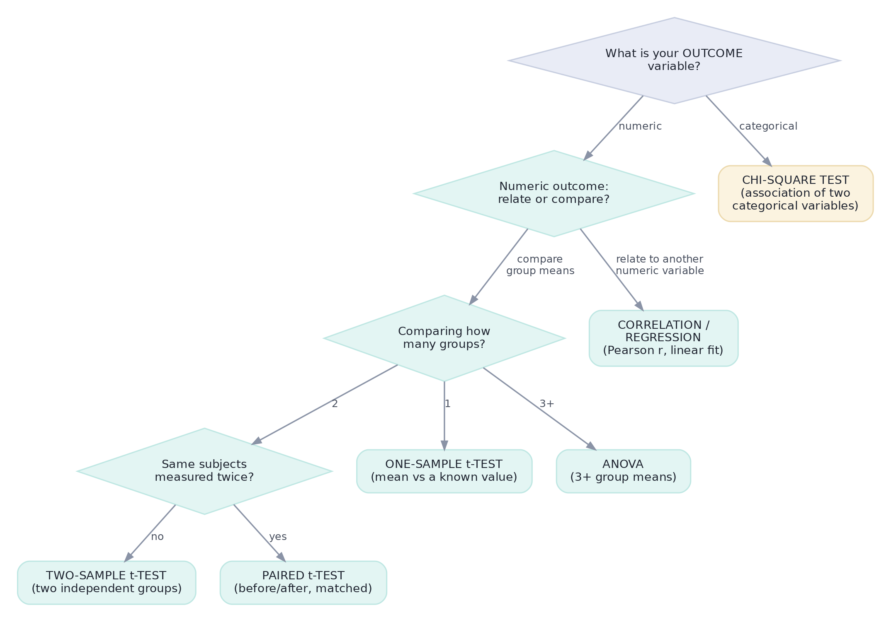
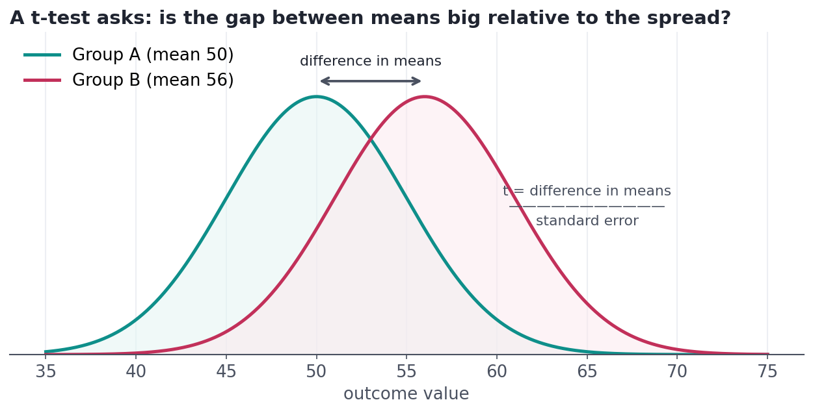

Choosing the Right Test
A decision tree from your data to the correct test, with runnable examples for the tests you'll actually use.
Last lesson gave you the logic of testing; this one gives you the menu. Reach for the wrong test and even a perfect calculation is meaningless. The good news: a short decision tree takes you from 'what does my data look like?' to 'here's the right test' almost every time.
Method · which test whenThe decision tree
Three questions pick your test almost always: Is the outcome numeric or categorical? Are you relating two variables or comparing groups? How many groups, and are they paired? Follow the arrows:

Concept · comparing meansThe t-test family
The t-test compares averages. It comes in three flavors for three situations:
- One-sample t-test: is this group's mean different from a known target? (Is average delivery time different from the promised 30 minutes?)
- Two-sample t-test: do two independent groups have different means? (Do users on the old vs new design check out at different speeds?)
- Paired t-test: did the same subjects change between two conditions? (Did each user's time improve before vs after a redesign?)
All three share one idea: judge the gap between means relative to the noise.

Concept · comparing proportionsChi-square for categories
When the outcome is categorical, means don't apply — you compare counts. The chi-square test of independence asks whether two categorical variables are associated by comparing the counts you observed against the counts you'd expect if they were unrelated. (Is return rate associated with region? Is clicking associated with which ad someone saw?)
Concept · the backup planWhen assumptions fail: nonparametric tests
The t-test assumes the data is roughly normal (or the sample is large enough for the CLT) and isn't dominated by wild outliers. When those assumptions break — small, skewed, outlier-ridden samples — use a nonparametric alternative that works on ranks instead of raw values: the Mann–Whitney U test replaces the two-sample t-test, and the Wilcoxon signed-rank test replaces the paired t-test. They trade a little power for robustness.
Worked exampleRun two tests for real
Here's a two-sample t-test (numeric outcome, two groups) and a chi-square test (categorical association), both with scipy. Notice you mostly just pick the function the tree points to and read the p-value.
import numpy as np
from scipy import stats
rng = np.random.default_rng(8)
# TWO-SAMPLE t-TEST: checkout times (seconds) for the old vs new design.
old = rng.normal(42, 11, size=80)
new = rng.normal(38, 10, size=75)
t, p = stats.ttest_ind(old, new, equal_var=False) # Welch's t-test (safe default)
print("Two-sample t-test (old vs new checkout time)")
print(f" old mean = {old.mean():.1f}s new mean = {new.mean():.1f}s")
print(f" t = {t:.2f}, p = {p:.4f} -> {'significant' if p<0.05 else 'not significant'}")
# CHI-SQUARE: is being returned associated with region? rows=region, cols=[returned, kept]
table = np.array([[150, 850], # North
[ 90, 910], # South
[165, 835]]) # West
chi2, pc, dof, _ = stats.chi2_contingency(table)
print("\nChi-square test (region vs returned)")
print(f" chi2 = {chi2:.1f}, dof = {dof}, p = {pc:.4f} -> "
f"{'associated' if pc<0.05 else 'no association'}")Two-sample t-test (old vs new checkout time) old mean = 41.8s new mean = 37.4s t = 2.50, p = 0.0135 -> significant Chi-square test (region vs returned) chi2 = 27.0, dof = 2, p = 0.0000 -> associated
Every test has fine print: observations should be independent; t-tests want roughly normal data or a large sample (CLT); chi-square wants a decent count in each cell (a common rule: expected counts ≥ 5). If the assumptions are badly violated, switch to a nonparametric test or a different method — a p-value from the wrong test is just a number.
★ Key points to remember
- Pick a test from three questions: outcome numeric or categorical, relate or compare, and how many groups / paired?
- t-test family: one-sample (vs a target), two-sample (two independent groups), paired (same subjects twice). For 3+ groups use ANOVA.
- Chi-square tests association between two categorical variables.
- Correlation/regression relates two numeric variables.
- When normality/outlier assumptions fail, use nonparametric tests (Mann–Whitney, Wilcoxon) that work on ranks.
◆ Practice▸
Show solution & reasoning
(a) One-sample t-test — one group's mean vs a known target (4.2). (b) Chi-square test — a categorical outcome (click / no click) across four design groups. (c) Two-sample t-test — comparing the mean of two independent groups (premium vs free).
Show solution & reasoning
Running six tests at α=0.05 inflates the chance of at least one false positive to well above 5% (roughly 1−0.95⁶ ≈ 26%), so a single 'hit' is likely by chance alone; ANOVA tests all variants together (or you apply a multiple-comparisons correction) to control that error rate.
◎ Deep dive: assumptions, Welch's t-test, post-hoc tests, and parametric vs. nonparametric▸
The assumptions, spelled out. The two-sample t-test assumes: (1) independence — observations don't influence each other (violated by repeated measures or clustered data); (2) approximate normality of the data or a large enough sample for the CLT to make the means normal; and (3) for the classic version, roughly equal variances — which is why Welch's t-test (the equal_var=False we used) is the safer default, since it doesn't assume equal spread.
After ANOVA, then what? ANOVA tells you some group differs, not which one. To find the culprit you run post-hoc pairwise comparisons (e.g., Tukey's HSD) that correct for the multiple looks. This two-step pattern — an overall test, then corrected pairwise tests — keeps your false-positive rate honest.
Parametric vs. nonparametric, in a phrase. Parametric tests (t, ANOVA) assume a distributional shape and, when it holds, squeeze the most power from your data. Nonparametric tests (Mann–Whitney, Wilcoxon, Kruskal–Wallis) assume far less and shine on small, skewed, or ordinal data — trading a little power for robustness. When results from both agree, you can report with confidence.
A frequent prompt is "which statistical test would you use here?" Narrate the decision tree out loud: outcome type → relate or compare → number of groups → paired or not. Name the test, then mention one assumption you'd check (independence, normality/large n, cell counts) and the nonparametric fallback. That structure shows you choose tests deliberately, not by reflex.